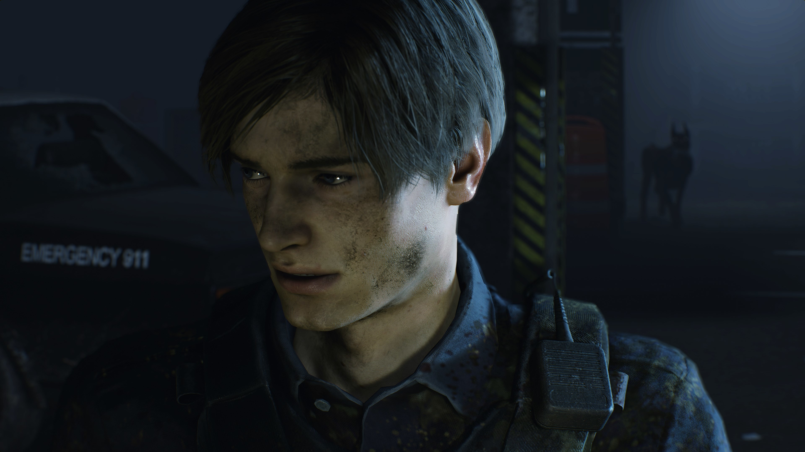

Leon Scott Kennedy Bio
Early life Kennedy is known to have suffered a traumatic childhood due to his family's connections to crime. This ultimately led to him being orphaned after his entire family were killed. Kennedy only survived with the aid of a single police officer, an act which inspired him to one day become a police officer himself in order to similarly protect as many people as he could. [10] Upon graduating from the police academy at the age of 21, Kennedy requested assignment to work for the Raccoon Police Department. His reason was interest in the widely publicized but unsolved bizarre murder cases taking place in and around the Arklay Mountains.[11]
First Apperance
Leon kennedy first apperance is in Resident evil 2 as a police officer, arriving to Raccoon City late because he at a motel drinking, past out and hungover. Kennedy drove southwards into the city as normal and was surrounded by Zombies while investigating a body in the middle of the unusually quiet main road. Retreating into an alleyway he met Claire Redfield, another newcomer, who was herself fleeing from Zombies within a diner. They commandeered an RPD cruiser and drove to the Raccoon Police Station to seek shelter and answers.
Operation Javier
n 2002, before the destruction of the Russian branch of Umbrella, Kennedy was sent to a small South American country as part of a secret military detachment after the headquarters were informed that a former researcher from Umbrella contacted a man named Javier Hidalgo. Due to the difficult nature of the operation, Jack Krauser, a seasoned and decorated U.S. Army Special Forces operator, was selected to be Kennedy's partner.
They later found themselves having to cooperate as a two-man cell in a t-Virus outbreak. Kennedy also met a mysterious girl called Manuela, who seemed to be the only survivor of the village, though it was unknown why she didn't escape. Manuela turned out to be Javier's daughter; she contracted a rare disease, and was kept alive by her father through the t-Veronica Virus. While exploring Javier's compound, Kennedy opened up to Krauser about his hellish night in Raccoon City, as well as Claire's encounter with the t-Veronica Virus to explain how Umbrella's B.O.W.s worked.